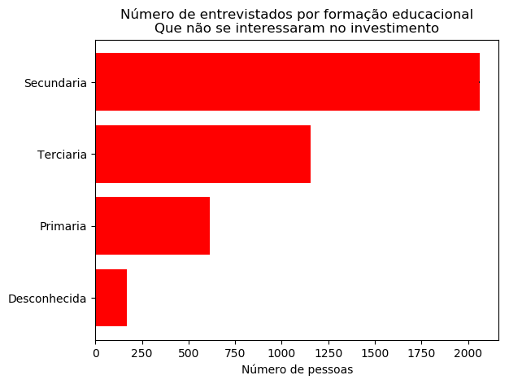
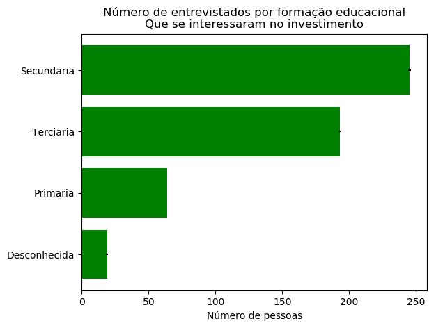
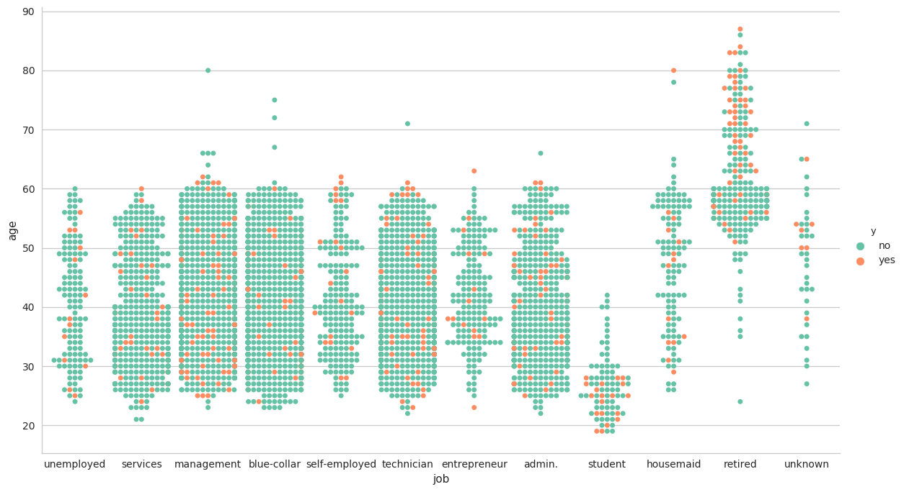

Este estudo tem por objetivo mostrar os clientes que aderiram ao investimento, conforme sua escolaridade, emprego atual, e demais caracteristicas.
Para familiarizarmos com os dados, segue uma amostra da tabela.
| age | job | marital | education | default | balance | housing | loan | contact | day | month | duration | campaign | pdays | previous | poutcome | y | |
|---|---|---|---|---|---|---|---|---|---|---|---|---|---|---|---|---|---|
| 0 | 30 | unemployed | married | primary | no | 1787 | no | no | cellular | 19 | oct | 79 | 1 | -1 | 0 | unknown | no |
| 1 | 33 | services | married | secondary | no | 4789 | yes | yes | cellular | 11 | may | 220 | 1 | 339 | 4 | failure | no |
| 2 | 35 | management | single | tertiary | no | 1350 | yes | no | cellular | 16 | apr | 185 | 1 | 330 | 1 | failure | no |
| 3 | 30 | management | married | tertiary | no | 1476 | yes | yes | unknown | 3 | jun | 199 | 4 | -1 | 0 | unknown | no |
| 4 | 59 | blue-collar | married | secondary | no | 0 | yes | no | unknown | 5 | may | 226 | 1 | -1 | 0 | unknown | no |
Para melhor entendermos cada variavel, vamos analisar algumas de suas especificidades.
| age | balance | day | duration | campaign | pdays | previous | |
|---|---|---|---|---|---|---|---|
| count | 4521.000000 | 4521.000000 | 4521.000000 | 4521.000000 | 4521.000000 | 4521.000000 | 4521.000000 |
| mean | 41.170095 | 1422.657819 | 15.915284 | 263.961292 | 2.793630 | 39.766645 | 0.542579 |
| std | 10.576211 | 3009.638142 | 8.247667 | 259.856633 | 3.109807 | 100.121124 | 1.693562 |
| min | 19.000000 | -3313.000000 | 1.000000 | 4.000000 | 1.000000 | -1.000000 | 0.000000 |
| 25% | 33.000000 | 69.000000 | 9.000000 | 104.000000 | 1.000000 | -1.000000 | 0.000000 |
| 50% | 39.000000 | 444.000000 | 16.000000 | 185.000000 | 2.000000 | -1.000000 | 0.000000 |
| 75% | 49.000000 | 1480.000000 | 21.000000 | 329.000000 | 3.000000 | -1.000000 | 0.000000 |
| max | 87.000000 | 71188.000000 | 31.000000 | 3025.000000 | 50.000000 | 871.000000 | 25.000000 |
Conforme a tabela, temos que a idade varia entre 19 anos e 87 anos, o saldo da conta de cada um podemos ver tambem que e bem desigual, varia de um saldo devedor de 3,313$ a 71,188$ positivos.
Temos um total de 4521 intrevistados, onde concluiram:
a terceiro momento temos a analise de quem recusou o investimento.
Em uma terceira analise quem aceitou o investimento
Dentre os que aceitaram temos que:
Neste momento focamos em anallisar os empregos dos intrevistados relacionando com suas idades e a possivel receptividade positiva.
Conseguimos ver que o foco de receptividade esta nas classes de aposentados com idade superior de 60 anos que disseram sim, sendo estes representados por 0,79% do total de intrevistados, estudantes com idade inferior a 30 anos que disseram sim, sendo este representados por 0,42% do total de intrevistados e uma possivel tendencia com os tecinicos com idade entre 55 e 65 anos que disseram sim, sendo estes representadoos por 0,19% do total.
Quantidade de intrevistados por profissao:
Dentre os que aceitaram a proposta, temos a porcentagem por profissao:
Porcentagem representada do total de intrevistados, separado por profissao: